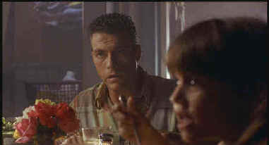

Columbia-Tristar/1993/94m/ANA,WS 1.85,PS 1.33
 |
Penal conversation.©Columbia-Tristar |
Jean-Claude Van
Damme is Sam, the taciturn former thief who sees his chance for redemption and a new life.
Taciturn cahracters limit the number of lines Van Damme has to deliver, emphasizing his
strong screen presence, and indeed, Van Damme seems more like a mortal in his fights in Nowhere
to Run. Kieran Culkin, the MacCauley sibling, is precocious as Mookie, who views Sam
as a father figure. You might want to check out Culkin’s current starring turn in The
Mighty, a very fine movie fantasy from director Peter Chelsom. Rossana Arquette does
good work as the lady of the house, and Ted Levine tires to act tough in the role of the
hired thug. He’s no Jack Palance, that’s for sure, but he does creepy well as he
proved in Silence of the Lambs.
Production values are okay, but the scope of the film is
wisely limited. Direction by Robert Harmon is crisp. Fight scenes are edited with no great
flare. The script has its holes: whatever happened to the other family the developer tries
to run out of town? Nowhere to Run does have a Mark Isham score and that seems to
prove a benefit to every film the composer works on.
Will I ever tire of singing the praises of
Columbia-Tristar’s superlative DVD transfers? I hope not. The level of consistency
brought to the DVD table by this team is truly admirable. Nowhere to Run is another
example of the company’s commitment to quality. The disc is sharp without being edgy.
The anamorphic transfer displays extraordinary film-like images. The color levels are
richly saturated, yet the skin tones have a broad and accurate range. Night sequences are
outstanding, daylight situations exhibit no grain in the blue skies. The Dolby Digital
2-channel sound does an effective job of creating a complimentary audio environment. The
opening is slightly high in output levels. There’s ample of bass to showcase some
dynamite blasting and the Isham musical is responsive. No, it’s not Shane, but
it’s damn good Van Damme.